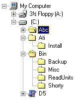
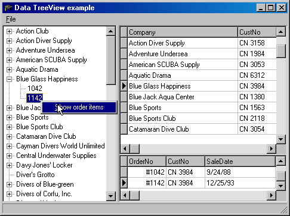
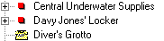
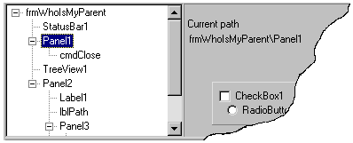

TreeViews Basics
Download article & projects
One of the least used components in Delphi is the TreeView control. When properly used the TreeView can make a big difference in how well someone can utilize your application. One good reason for using a TreeView is, humans identify with graphics much better then with text. Just looks at road signs, at least for me the color and shape of a sign triggers a response prior to reading the text on the sign. One significant aspect of a TreeView is that each branch item (node) can be represented with an image. Example, Microsoft Explorer uses different images for open and closed folder(s), see example below.
Figure 1

Note in the above example several non-selected nodes have special images. This makes them easy to identify much like road signs. The last two nodes in the example make use of custom images assigned by a Delphi application written by Neil J. Rubenking.
Another compelling reason for using trees is that they are good for representing a window that displays a hierarchical list of items, such as the table data, or the files and directories on a disk. Suppose you have a user or users who find it difficult to traverse data in grids or have limited space on a form to show the data. Using a TreeView makes it much easier to traverse the data since the relationships are easier to understand when viewed with links to parent to children data shown linked together with lines.
Figure 2

Although the example above makes it easier to see relationships it could be enhanced. For example, by using images companies with no orders could use one image while companies with orders use another image. A sales person would know which company to call to see if they need anything. Of course a report could be made to show the no-order companies also.
Snippet for special images (compare above image with below image on node Driver’s Grotto)
Figure 3

Note: The grids in figure 2 are there to show that the TreeView data moves through the data. In a real application the grid space would be used as business rules dictate.
Basics: Adding nodes
The main parts of a TreeView are nodes (TTreeNodes), which are a collection of type node (TTreeNode). TTreeNodes are seen as the items property of a TreeView, within the items are the individual nodes which are of type TTreeNode. Delphi help will tell you that a node can be accessed as follows:
MyTreeNode := TreeView1.Items[1];
This will access the second node (providing there are at least two nodes in the TreeView). Also mentioned in the help file, avoid referencing a node, as in the above example, this is slow. Most likely you will want to access the selected node (see figure 4)
Figure 4
procedure TfrmTrees.cmdSelectedNodeClick(Sender: TObject);
var
tNode: TTreeNode;
begin
tNode := TreeView1.Selected ;
if tNode = nil then
exit ;
To add a single node to a TreeView;
Figure 5
This adds a single node to a TreeView with no nodes:
TreeView1.Items.AddFirst(TreeView1.Selected,'Root') ;
or
TreeView1.Items.AddFirst(nil,'Root') ;
and borrowing code from figure 4
TreeView1.Items.AddFirst(tNode.Selected,'Root') ;
In the above example one node would be displayed within the TreeView at level zero. As nodes are added beneath the node the level increases. If you need to know the level, use the level property of TTreeNode which starts at zero and increments by one for each level down. Continuing on, to add a node at the same level as the prior one use the method AddChild. When using AddChild the first parameter indicates where the node will be placed i.e.
TreeView1.Items.AddFirst(TreeView1.Selected,'Root') ;
TreeView1.Items.AddChild(TreeView1.Selected,'Child') ;
The result will be two new nodes at level zero since we have not specifically pointed to a node to add the new nodes too. This is the same as
TreeView1.Items.AddFirst(nil,'Root') ;
TreeView1.Items.AddChild(nil,'Child') ;
If you examine Delphi source code Addxxx calls a function called AddObjectFirst. This function ask the question, Is the node being passed equal to nil? If not then the parent node is used to add the new node to the TreeView, otherwise a call to InternalAddObject is called which handles creating a node if needed. In either case Root and child will be at level zero. If the intent was to place Child beneath Root (making Child and sibling of Root) then we need to tell the TreeView exactly were to place the Child node.
This is how it is done, declare a variable of type TTreeNode. Assign it to the result of AddFirst which returns a reference to the node just added. This reference is then used as parameter one for the AddChild method to attach a child to the node just added rather then at the same level as the node added labeled as "root".
var
nNode: TTreeNode ;
begin
nNode := TreeView1.Items.AddFirst(nil,'Root') ;
TreeView1.Items.AddChild(nNode,'Child') ;
Besides visually seeing the level of the second node in relation to the first node use the OnChange event of the TreeView to dynamically check the level
procedure TfrmBasicOne.TreeView1Change(Sender: TObject; Node: TTreeNode);
begin
if Node <> nil then
Caption := 'TreeView1Change, Node level is ' + IntToStr(Node.Level)
else
Caption := 'TreeView1Change, Node level is unknown' ;
end;
IMPORTANT NOTE: Never assume there is a Selected node at any given time. Always check as shown above.
Nodes can also be added in a way, which allows you to store objects with the node. All of the Add methods have methods for adding objects. For instance
TreeView1.Items.Add has a mirror of TreeView1.Items.AddObject
Just about anything you want can be stored using AddObject. In the demos included there are several examples which store records, classes and VCL objects. Shown below in figure 6 are three examples. The code in figure 6 is part of the demos, data is shared between two TreeViews on a form.
Figure 6
type TBranchNodeData = class
hRootKey: HKEY ;
sPath : String;
NodeID : HTreeItem ;
end;
type
TBranchBookMarkData = class
NodeID : HTreeItem;
sPath : String;
end;
type
TExpandStrData = Record
Reg: TRegistry ;
KeyName: String ;
iImage: Integer ;
end;
var
xNode : TTreeNode ;
BookNode: TTreeNode ;
hID : HTreeItem ;
begin
xNode := RegBranchTree.Items.AddChild(aNode,aList.Strings[i]) ;
with xNode do
begin
hID := ItemId ;
Data := TBranchNodeData.Create ;
cKey := aList.Strings[i]
cRoot := RootKeyName(rKey) ;
with BookMarkTree do
begin
BookNode := Items.AddChild(Selected,cKey) ;
end ;
BookNode.Data := TBranchBookMarkData.Create ;
TBranchBookMarkData(BookNode.Data).NodeID := hId ;
TBranchBookMarkData(BookNode.Data).sPath := cKey ;
TBranchNodeData(Data).NodeID := BookNode.ItemId ;
end ;
end ;
A simpler demo is also shown where a TreeView is populated with nodes where each one references a TTabSheet on a PageControl.
Basics: assigning images to nodes
Each node added to a TreeView can be assigned images. The property Images is used for assigning images for displaying on the left side of a node. The property StateImages can help display the "state" of an image, this is in addition to the Images image and can be displayed at the same time. To use these properties a TCustomImageList is needed for each property, or one can be shared between the two. Once there are images added to the Image List you must tell the TreeView which images to use using TreeView.Images from the object inspector or in code.
Figure 7
aNode := TreeView1.Items.AddChild(Node,'Whatever’);
with aNode do
begin
ImageIndex := 0 ;
SelectedIndex := 1 ;
end ;
Shown in figure 7 a new node is added and the image properties are set.
Basics: Who is my parent?
Once nodes have been added to a TreeView there will be times when the path leading to the node is needed. Shown in figure 8 is a recipe for getting the path.
Figure 8
var
nParent : TTreeNode ;
begin
if Node = nil then
exit ;
nParent := Node.Parent ;
if not (nParent = nil) then
begin
SomeStringList.Add(nParent.Text) ;
nParent := nParent.Parent ;
{ Always a good idea when in such a loop }
Application.ProcessMessages ;
if Application.Terminated then
exit ;
end ;
end;
Once you have collected the items iterate backwards through the list and add the items to a string variable (this is shown in the demo project).
Demo projects
There are several demo projects, some simple, some very complex. JCL is required for some of the projects and can be found on the JCL Project site.
Highlights for each project
Trees_One.dpr
This project consist of eleven forms, the main form is a launch pad for the remaining forms.
- Basic1.pas there are a few simple examples of adding nodes to a TreeView.
- Basic2.pas shows how to prevent a user from selecting a node in the Changing event of the TreeView.
- Basic3.pas has a lot of code to show how to place objects into a node. More or less this only takes a few lines of code and the remaining code is only needed to see a working example.
Snippet from Basic3; a node is added to a TreeView with the caption of a TPageControl for the node’s caption and in the second parameter a TTabSheet object.
with PageControl1 do
TreeView1.Items.AddObject(nil,Pages[i].Caption,Pages[i]) ;
Later, while the user is traversing the TreeView the code below changes the active sheet in the TPageControl using the sheet object stored in the node.
procedure TfrmAddObject.TreeView1Change(Sender: TObject; Node: TTreeNode);
begin
if Node = nil then
exit ;
if Node.Data = nil then
exit ;
PageControl1.ActivePage := TTabSheet(Node.Data) ;
end;
- WhoIsMyParent.pas; Suppose you are no a node and need to know all it’s parents, in other words a string path to the node up to its highest parent.
Figure 9

Using the OnChange event of the TreeView we can build a path starting at the selected node which ends at the lowest level of the tree. Each node is stored in a list and later reversed into a string. This can be seen to the right of the TreeView.
- Unit1.pas shows many things such as tracking the selected node and it’s parent nodes various properties. The TreeView was created in the second demo project and saved to disk using TreeView.Items.SaveToFile method. Next it was placed into a RC file and a RES file was created. To load the TreeView from resource the following code was used.
procedure TfrmTrees.FormCreate(Sender: TObject);
var
rs: TResourceStream ;
begin
rs := TResourceStream.Create(hinstance,'TREE_DATA', RT_RCDATA ) ;
try
TreeView1.LoadFromStream(rs) ;
rs.Position := 0 ;
RichEdit1.Lines.LoadFromStream(rs) ;
Using a stream we load the nodes into a resource stream, which is then loaded, into the TreeView using the method called LoadFromStream.
Another point of interest in unit1 is the ItemID property of TTreeNode. By storing the ItemID value it can later be used to revisit the node at a later time by selecting it in the ListBox. This is important to know in the event you need to bookmark and node, go back to it without actually selecting it and finally get information about it all without visually selecting it. You can also visually select it too.
The following code shows how to store the ItemID of the selected node into a TListBox. To store the property it is first typecast to an integer and then converted to a string for storage.
cNodeId := IntToStr(Integer(TreeView1.Selected.ItemID)) ;
if HTreeItemList.Items.IndexOf(cNodeId) = -1 then
begin
HTreeItemList.Items.Add( cNodeId ) ;
...;
end ;
The following code shows how to select a node which was stored in the above snippet
procedure TfrmTrees.cmdGoToNodeClick(Sender: TObject);
var
iNodeID : integer;
FoundNode : TTreeNode;
iIndex : Integer ;
begin
iIndex := HTreeItemList.ItemIndex ;
if iIndex = -1 then
exit ;
iNodeID := StrToIntDef(HTreeItemList.Items.Strings[iIndex],0) ;
if( iNodeID = 0 ) then
exit;
FoundNode := TreeView1.Items.GetNode(HTreeItem(iNodeID));
if(FoundNode <> nil) then
begin
FoundNode.Selected := true;
TreeView1.SetFocus ;
end ;
end;
First several checks are made to prevent an access violation in the event the item is valid, we then pass the integer value taken from the ListBox and cast it as type HtreeItemList within the method GetNode which if all works we return a TTreeNode on the TreeView. At this point the node is only being referenced and not actually selected. We first check to see if the variable contains a valid reference to a node, if it does the node is then made the selected node.
Another highlight within the unit is code to duplicate a branch in the TreeView and place it into another TreeView. There are no previsions for this in TTreeView, there is on the other hand a Move method for moving nodes within itself. The main point in duplicating nodes is the use of recursion, meaning calling a function which calls itself until all node(s) belonging to the currently selected node are copies into the target TreeView. If you have never used recursion before this might be a helpful example. Note: There are other uses of recursion in this and the second demo project. In the other demo recursion is used to traverse the Windows system registry to create a look-a-like of RegEdit with a twist.
Also shown is a TreeView which stores bookmarks for records in several tables. Again we store data in the data property of each node. Later the data is used to take you to the corresponding record using the code below.
tOrders.gotobookmark(Node.Data)
No type-casting is needed here. I should point out that in some cases data stored in a node may require initialing memory for the data and is not freed by the TreeView. In this case you must free the memory allocated yourself.
Other examples in this project included building trees containing directories and also a tree which places all running programs into a TreeView.
EmulateRegistry.dpr
This project is a more complex example of using a TreeView. Here is a general overview;
- HKEY_CURRENT_USER of the registry is read using some JCL registry functions with the help of recursion to build a TreeView which resembles a cross between the system registry editor and Norton Utilities registry editor. All branches are created which reside under HKEY_CURRENT_USER.
- HKEY_LOCAL_MACHINE branch is built by building the top branches and then placing dummy nodes beneath the true nodes. As the user traverses the nodes the dummy nodes are deleted and true nodes are created.
- Any node can be selected and bookmarked. Any marked nodes are placed into a secondary TreeView which when clicking the node you are whisked to the node in the main TreeView. bookmarks are stored within the system registry so that they can be used across sessions. These bookmarks can also be removed.
- Many of the concepts used for building this project were broken down into the first demo project so that it could be seen better how many things were done.
- A special class (bookmarkmanager.pas) was created to manage bookmarks. Actually the core of the class is managing four separate TStringList.
- This project is highly complex and most likely will take some time to fully understand.
- Being we are accessing HKEY_LOCAL_MACHINE there might be run time errors if the proper rights to this branch are not set.
- Limited testing was done under Windows2000. At least one key could not be read, seems that it can not be accessed even with administrator rights.
Conclusion
In closing, I feel that we have covered the bare essentials for working with a TreeView. In no way have I covered all, which is needed to fully use Delphi’s wrapper for the TreeView control.
References (not comprehensive)
TreeNT, by Mike Lischke, is a complete replacement of Borland's treeview implementation and includes many improvements and enhancements TreeNT is a completely autarchic implementation and does not need the original TTreeView to work.
Objective Software Technology (ABC component library), they have a nice TreeView which is data-aware
An excellent TreeView tutorial
Delphi demo for custom draw of a TreeView in your Delphi\Demos\CustomDraw directory.
Required
JCL Jedi library, found at the JCL Project site
|